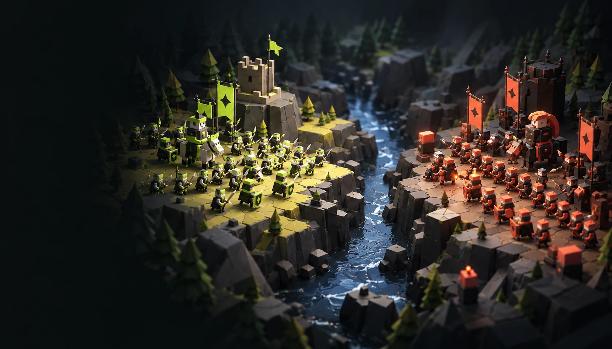
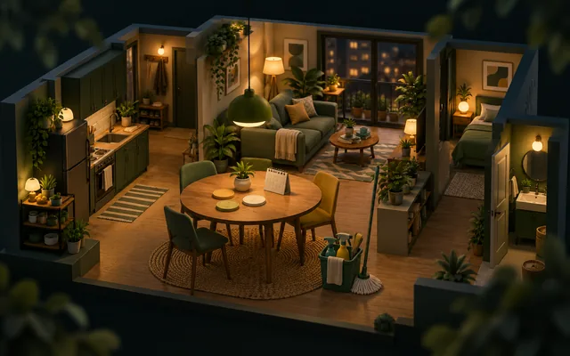
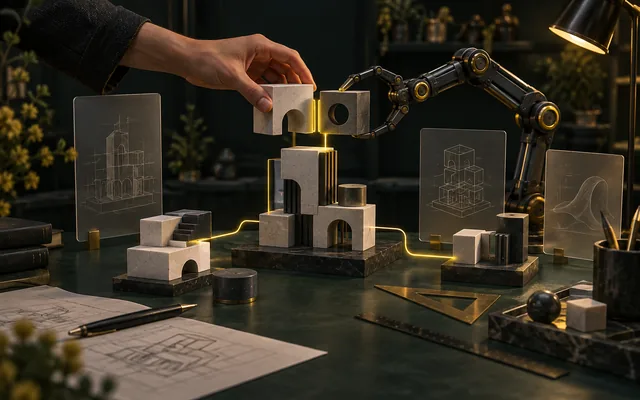

概念封面THE WORK INDEX / 01—08
想法落地，
就有了这些作品。
喜欢游戏，就开一局。
对工具与 AI 感兴趣，也有得逛。
08个作品
5 游戏 · 2 工具 · 1 学习
快速了解我：交互游戏、生活工具、人机协作。关于我
显示 8 / 8 个作品
-
概念封面 · 非实际截图 -
概念封面 · 非实际截图 -

概念封面 · 非实际截图 -

概念封面 · 非实际截图 -
概念封面 · 非实际截图 -
概念封面 · 非实际截图 -
概念封面 · 非实际截图 -
概念封面 · 非实际截图
TRY ANOTHER IDEA
没有找到这个作品。
换个关键词，或清除筛选再逛一逛。
7 个公开作品 · 1 个受限入口。封面均为概念创作，不是产品截图。
目录核对于
保持好奇，持续动手。
也看看我的学习记录 ↓A LITTLE ABOUT ME
你好，我是丁康。
我的关注方向是 AI Agent 与金融科技。我喜欢把抽象想法变成可以体验的东西，也在用游戏、生活工具和协作工作台持续探索。这些作品，是了解我的一个起点。
- 方向
- AI Agent 与金融科技
- 作品
- 8 个作品 · 游戏 / 工具 / 学习
- 笔记
- 公开笔记待整理 · 已有日志受限访问
LEARNING IN PUBLIC
把理解，慢慢写下来。
这里将收录整理后的公开笔记。按方向浏览，或找一个感兴趣的关键词。
尚无公开笔记
ROOM FOR WHAT COMES NEXT
笔记正在整理。
目前还没有发布文章。新的理解与实践，会在整理后出现在这里。
已有学习日志与访问说明
「从零搭建 Agent · 架构学习日志」为受限站点，需要已有访问权限。这里不展示或复制日志正文。
打开受限学习日志（需要访问权限，新标签页）